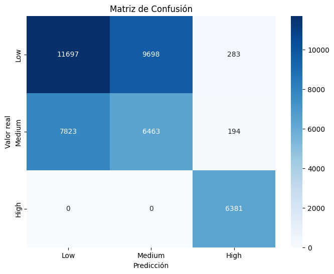
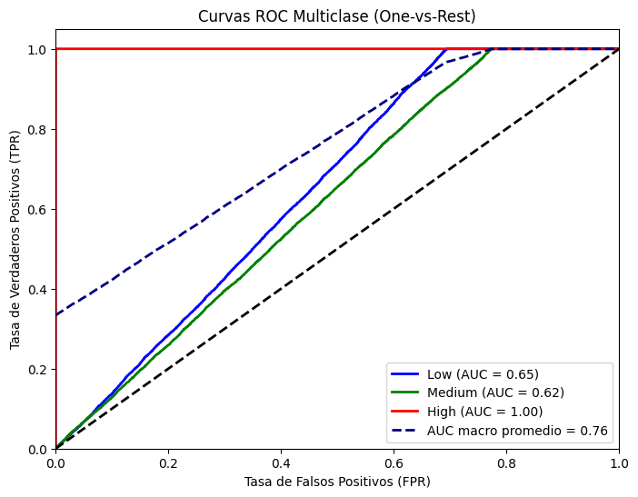
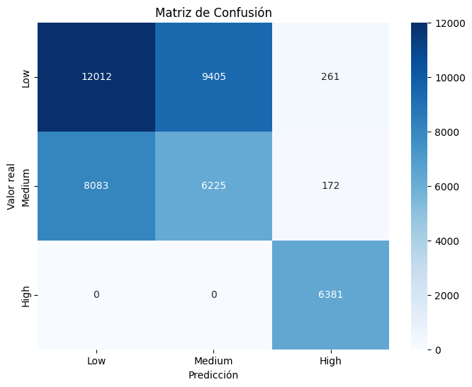

Modelo original#
librerias#
import warnings
warnings.filterwarnings('ignore')
import time
import pandas as pd
import numpy as np
from sklearn.model_selection import StratifiedKFold,cross_val_predict,train_test_split
from sklearn.preprocessing import LabelEncoder, StandardScaler, OneHotEncoder
from sklearn.neighbors import KNeighborsClassifier
from sklearn.linear_model import LogisticRegression
from sklearn.ensemble import RandomForestClassifier,StackingClassifier
from sklearn.utils.class_weight import compute_class_weight
from sklearn.pipeline import Pipeline
from sklearn.compose import ColumnTransformer
from sklearn.utils.validation import check_is_fitted
from imblearn.pipeline import Pipeline as ImbPipeline
from imblearn.over_sampling import SMOTE, ADASYN
from sklearn.base import BaseEstimator, ClassifierMixin,clone
from sklearn.metrics import (
accuracy_score, precision_score, recall_score, f1_score,
roc_auc_score, confusion_matrix, classification_report,
roc_curve, auc
)
import xgboost as xgb
from xgboost import XGBClassifier
Carga de datos#
X_train = pd.read_csv('data/X_train.csv')
y_train = pd.read_csv('data/y_train.csv')
X_test = pd.read_csv('data/X_test.csv')
y_test = pd.read_csv('data/y_test.csv')
X_train.shape, X_test.shape, y_train.shape, y_test.shape
((170152, 14), (42539, 14), (170152, 1), (42539, 1))
y_train = y_train.squeeze()
y_test = y_test.squeeze()
mapping = {"Low": 0, "Medium": 1, "High": 2}
y_train_enc = y_train.map(mapping)
y_test_enc = y_test.map(mapping)
labels = list(mapping.values())
target_names = list(mapping.keys())
from funciones import *
Modelo implementado#
class AdvancedEnsemblePrunedClassifier(BaseEstimator, ClassifierMixin):
def __init__(self, base_models=None, keep_k=5, alpha=0.4, internal_val_size=0.2, random_state=0):
self.base_models = base_models
self.keep_k = keep_k
self.alpha = alpha
self.internal_val_size = internal_val_size
self.random_state = random_state
self.models_ = None
self.pruned_ = None
def fit(self, X, y):
# ============================
# 1. INTERNAL SPLIT
# ============================
X_train_int, X_val_int, y_train_int, y_val_int = train_test_split(
X, y,
test_size=self.internal_val_size,
stratify=y,
random_state=self.random_state
)
# ============================
# 2. TRAIN BASE MODELS
# ============================
self.models_ = []
for model in self.base_models:
m = clone(model)
m.fit(X_train_int, y_train_int)
self.models_.append(m)
# ============================
# 3. CALCULATE PREDICTIONS
# ============================
all_probs = np.array([m.predict_proba(X_val_int) for m in self.models_])
predictions = np.array([m.predict(X_val_int) for m in self.models_])
# ============================
# 4. MARGIN CALCULATION
# ============================
margins = []
for probs in all_probs:
correct_probs = probs[np.arange(len(y_val_int)), y_val_int]
top2 = np.partition(probs, -2)[:, -2:]
second_best = np.min(top2, axis=1)
margin = np.mean(correct_probs - second_best)
margins.append(margin)
margins = np.array(margins)
# ============================
# 5. DIVERSITY (CORRELATION OF ERRORS)
# ============================
y_val_np = np.array(y_val_int)
errors = (predictions != y_val_np).astype(int)
diversity_scores = []
for i in range(len(self.models_)):
model_errors = errors[i]
others = np.delete(errors, i, axis=0)
corr_list = []
for other in others:
c = np.corrcoef(model_errors, other)[0, 1]
corr_list.append(c)
diversity_scores.append(np.mean(corr_list))
diversity_scores = np.nan_to_num(diversity_scores, nan=1)
# ============================
# 6. F1-MACRO INDIVIDUAL
# ============================
f1_scores = np.array([
f1_score(y_val_int, predictions[i], average='macro')
for i in range(len(self.models_))
])
# ============================
# 7. OPTIMIZED SCORE
# ============================
final_scores = (
0.5 * margins +
0.5 * f1_scores -
self.alpha * diversity_scores
)
# ============================
# 8. SELECT TOP K MODELS
# ============================
best_idx = np.argsort(final_scores)[-self.keep_k:]
self.pruned_ = [self.models_[i] for i in best_idx]
return self
def predict_proba(self, X):
probs = np.array([m.predict_proba(X) for m in self.pruned_])
return np.mean(probs, axis=0)
def predict(self, X):
return np.argmax(self.predict_proba(X), axis=1)
base_models = [
# Random Forest: menos profundidad, hojas más grandes y menos features por árbol -> menos varianza
RandomForestClassifier(
n_estimators=400,
max_depth=5, # bajar profundidad
min_samples_leaf=8, # hojas más grandes
min_samples_split=10, # splits más conservadores
max_features=0.3, # menos features por split para más diversidad
bootstrap=True,
random_state=33,
class_weight="balanced"
),
# XGBoost (modelo 1): más regularización, menor lr, menor colsample/subsample
XGBClassifier(
objective="multi:softprob",
num_class=3,
n_estimators=300, # aumentar y bajar lr (más iteraciones menos learning rate)
learning_rate=0.03, # bajar lr para entrenamiento más estable
max_depth=2, # déjà vu: profundidad baja
min_child_weight=10, # más conservador ante particiones con pocas muestras
subsample=0.7, # muestreo por fila -> reduce overfitting
colsample_bytree=0.7, # muestreo por columna -> reduce correlación
gamma=0.0,
reg_lambda=6.0, # aumentar regularización L2
reg_alpha=2.0, # aumentar regularización L1
max_delta_step=1,
random_state=12,
use_label_encoder=False,
eval_metric="mlogloss"
),
# XGBoost (modelo 2): configuración distinta para diversidad, también más regularizado
XGBClassifier(
objective="multi:softprob",
num_class=3,
n_estimators=220,
learning_rate=0.03,
max_depth=3,
min_child_weight=12,
subsample=0.7,
colsample_bytree=0.6,
gamma=0.0,
reg_lambda=6.0,
reg_alpha=1.5,
max_delta_step=1,
random_state=21,
use_label_encoder=False,
eval_metric="mlogloss"
),
# KNN: aumentar k suaviza la frontera de decisión (menos ruido)
KNeighborsClassifier(
n_neighbors=35, # más vecinos => frontera más suave
weights="uniform", # keep uniform to avoid prioritar puntos cercanos que generan varianza
metric="minkowski",
p=2
)
]
# 2. Crear ensemble con pruning
ensamble_pruned = AdvancedEnsemblePrunedClassifier(
base_models=base_models,
keep_k=3,
alpha=0.3,
internal_val_size=0.2,
random_state=0
)
# 3. Ajustar ensemble podado con datos preprocesados
pipe_pruning = crear_pipeline(ensamble_pruned, tipo="balanceo_smote",y_train=y_train_enc)
start = time.time()
modelo_pruning=pipe_pruning.fit(X_train, y_train_enc)
end = time.time()
print(f"Tiempo de ejecución: {(end - start)/60:.2f} minutos")
Tiempo de ejecución: 1.99 minutos
evaluar_modelo(modelo_pruning,X_test,y_test_enc,class_map=mapping)

Classification Report:
precision recall f1-score support
Low 0.60 0.54 0.57 21678
Medium 0.40 0.45 0.42 14480
High 0.93 1.00 0.96 6381
accuracy 0.58 42539
macro avg 0.64 0.66 0.65 42539
weighted avg 0.58 0.58 0.58 42539
{'Accuracy': 0.576905898117022,
'Precision (macro)': 0.6431970411000223,
'Recall (macro)': 0.6619730253295472,
'F1-score (macro)': 0.6512220867450741,
'ROC-AUC': 0.7557890641987441}
plot_roc_multiclass2(modelo_pruning,X_test,y_test_enc,class_map=mapping)

Gridseach#
param_grid_wide = {
"model__keep_k": [1, 2, 3],
"model__alpha": [0.05, 0.1, 0.2, 0.3],
"model__internal_val_size": [0.1, 0.15, 0.2]
}
pipe_pruning = crear_pipeline(ensamble_pruned, tipo="balanceo_smote",y_train=y_train_enc)
grid_pruning = GridSearchCV(
estimator=pipe_pruning,
param_grid=param_grid,
scoring="f1_macro",
cv=5,
verbose=2,
n_jobs=-1
)
start = time.time()
grid_pruning.fit(X_train, y_train_enc)
end = time.time()
Fitting 5 folds for each of 27 candidates, totalling 135 fits
print(f"Tiempo de ejecución de la búsqueda en cuadrícula: {(end - start)/60:.2f} minutos")
Tiempo de ejecución de la búsqueda en cuadrícula: 90.64 minutos
print(grid_pruning.best_params_)
print(grid_pruning.best_score_)
{'model__alpha': 0.1, 'model__internal_val_size': 0.1, 'model__keep_k': 4}
0.6532829384077716
best_model_pruning = grid_pruning.best_estimator_
evaluar_modelo(best_model_pruning,X_test,y_test_enc,class_map=mapping)

Classification Report:
precision recall f1-score support
Low 0.60 0.55 0.58 21678
Medium 0.40 0.43 0.41 14480
High 0.94 1.00 0.97 6381
accuracy 0.58 42539
macro avg 0.64 0.66 0.65 42539
weighted avg 0.58 0.58 0.58 42539
{'Accuracy': 0.5787160017865959,
'Precision (macro)': 0.6441625161436003,
'Recall (macro)': 0.6613378242269196,
'F1-score (macro)': 0.6519255851837218,
'ROC-AUC': 0.7557832015850666}
plot_roc_multiclass2(best_model_pruning,X_test,y_test_enc,class_map=mapping)